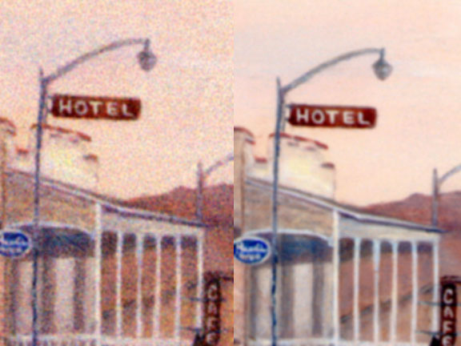
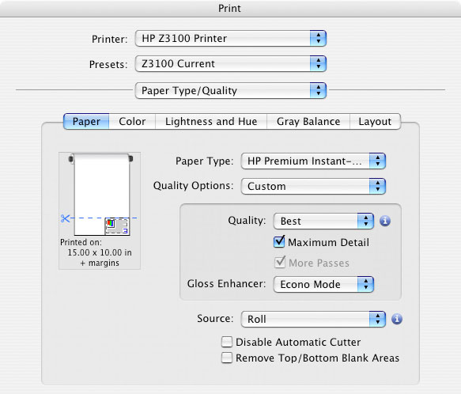
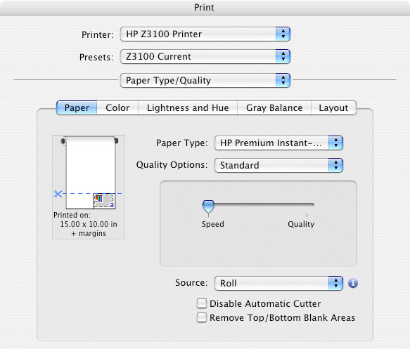

A Digital Artist's Journal
Part II
From the Box Up
by JD Jarvis
Life with a new printer
A Digital Artist's Journal
Part II
From the Box Up
by JD Jarvis
Life with a new printer
Features and Other Fevers
4/2/2007
No sooner had we got the new printer up and ready than we contracted a pretty nasty case of the flu, as did nearly everyone that attended the same large, family wedding. We could not print anything for more than a week, but this actually allowed us to experience one of the latest features designed into the Z series printers, namely, automatic print head maintenance. Ordinarily, whether on vacation or working on art rather than printing it, if I were away from the CP2500 for more than a few days, the chances were very good that I would have to resort to all kinds of arcane machinations in order to get ink flowing to all four print heads. This would involve, after the normal head cleaning procedures, either orbiting the offending print head around like some sort of demented Softball pitcher, rapping the head down repeated on a thin cushion of paper towels or both. I understand that for my fellow artists who employ a printer with permanent or non-removable heads, a dried out or clogged print head means lots of wasted ink and paper in order to free up the ink flow.While it is somewhat disquieting to hear one's printer switch on for 30 seconds every 8 hours or so, when I returned to the printer it was ready to go and started turning out good quality prints from the beginning of the session. HP achieves this by advising the operator to leave the printer powered up. At a factory set interval, the printer wakes up and runs a very small amount of ink through each head. This maintenance uses no paper and a miniscule amount of ink. I saw no change in ink levels after my week of convalescence and whatever amount of ink was used was certainly worth it to avoid this old bug-a-boo.
Myriam and I have decided that we would use the materials that were given us to print a series of test prints for a small group of artists I communicate with on a fairly regular basis. This seems a better way to get more variety of images and some impartial points of view. While awaiting the arrival of a supply of selected matte fine art papers, we began making black and white and color photo prints of files sent to my ftp site by these individuals. I requested files that they felt would look good on photographic papers and to hold off sending me their digital fine art pieces until I had more appropriate papers. Of course, what are the appropriate papers for any particular piece is largely a matter of individual taste and a question that grew and became less clear as this testing phase progressed.
4/9/2007
During this initial test period we have been printing on the HP Instant Dry Glossy and the ID Satin finished photo papers. Each a nice 260 g/m2 paper with the weight and feel of many traditional wet chemistry photo stock. Using these papers have provided an opportunity to test another important feature designed into the Z3100. That being, the elimination of bronzing through the application of what HP calls a gloss enhancer. Bronzing is a visual phenomenon that occurs when printing, mainly, black and white images on glossy papers using an inkjet printer. It is called bronzing because it imparts a metallic bronze colored sheen to areas of the print. This is specific to inkjet printing because the bronzing effect is caused by light passing through varying thicknesses of ink as the image transitions from white (no ink) to black (the most dense ink on the paper) and the varying degrees of gloss that is reveled or covered up by this process. HP's gloss enhancer is a clear liquid (not really an ink) that eliminates bronzing by evening-out the glossy quality of the ink at all points where these dark to light transitions occur. You can select between a full page mode and an economy mode, so called because it applies gloss enhancer only where it is needed. Gloss Enhancer is automatically disabled when printing on matte art papers because the bronzing problem occurs only when using glossy or semi-glossy substrates. Since the gloss enhancer goes down and mixes with the rest of the inks, HP is quick to point out that the gloss enhancer is not a top coat or sealant. But, it does totally eliminate bronzing.Which brings up the question, to bronze or not to bronze or as Pat Morita fans might say, gloss on, gloss off? With the events that Hewlett-Packard sponsors and in the majority of the promotional material published around the Z3100 it is clear that digital photographers rule. And, why not? This is the huge and continually growing market that has driven digital imaging since the beginning. HP has committed much research and effort and five of the twelve inks in the Z3100 system to getting black and white photo prints right. They are very proud of getting rid of bronzing. Needless to say, then, it is a bit funny to see an HP engineer's chin drop when a digital artist picks up a black and white photo print and says they think the bronzing effect is interesting. Here is a perfect example of the difference between a digital artist and a digital photographer or an artist and just about anyone else for that matter. Where one sees an imperfection, the artist sees an effect that, in the right context, could be useful or at least interesting. With the Z3100, the point is that the bronzing imperfection has been eliminated, while the bronzing effect can be accessed and controlled if that is your desire. And, who can argue with more access and control.
One thing all of my digital art testers agreed on was that using its complement of Gloss Black ink, Matte Black ink, Gary ink, Light Gray ink and Gloss Enhancer the Z3100 produces remarkably neutral black and white images. This is true whether I turned print in grayscale on or off while printing a black and white image. With the Z3100, if there is going to be a greenish cast or other color tints in a black and white print it is because the artist/photographer has created that image to display those color tones. The savvy reader among us will note that since both Matte Black and Glossy Black inks are on-board, the Z3100 can print on either glossy or matte paper without flushing ink systems or any kind of delay for that matter.
In addition, having seen numerous test images displayed under various controlled lighting situations in the HP labs, I can vouch for the high degree of control over metamerism that Z3100 prints exhibit. In the end, the shifting of colors due to a change in the conditions of the lighting under which artwork is viewed is a concern that painters, photographers and video engineers will never be able to eliminate. If you want to absolutely guarantee that the viewer sees it the way you intended it you have to control the lighting situation under which the work is displayed. The next best solution, which all inkjet printer manufacturers are pursuing, is to formulate inks and papers that broaden the spectrum of lighting conditions under which colors appear to match or metamer. Also, it is important to note that using papers with optical brighteners can contribute to metamerism in that these brighteners often fluoresce under ultra-violet light. So, engineers and designers can do only so much in this area then, it is up to the artist and printmakers and galleries to close the loop on metamerism.
Since glossy photo papers are known for their image sharpness and clarity, I had the opportunity to test something I had long suspected, but could finally prove. Over the years that we continued printing artwork on the CP2500 DesignJet, we saw many new printers come to market boasting 1200 d.p.i. (and beyond) printing capabilities. The inference being, that the higher the d.p.i. (dots per inch) the greater the resolving power and therefore the more detail in the resulting print. Having worked in Television Production all these years I know that things such as sharpness, resolving power and detail are slipper subjects not often related to the ability to see more information, but rather how the visual information you have is presented. The fact that there are more dots of ink rendering the same number of pixels per inch (p.p.i.) did not compute to me as increased resolving power. And, yet some of these new printers did seem to produce clearer imagery. In order to test this I sent the artists samples of one of their image files printed on the Z3100 at both 600 d.p.i. and 1200 d.p.i. asking if they could see any difference in the ability of either print to resolve the fine details in the image.
Much to the amazement of some there was unanimous agreement that there is no difference between prints made at 600 d.p.i. versus 1200 d.p.i. One HP engineer had told a webminar I attend this very thing: "1200 d.p.i. is not necessary unless you are perhaps printing a document with text that is under 6 pts." Sorry, but my eyes cannot resolve print under 9 pts. And the only people using 6pt. type, that I am aware of, are doing so exactly because people cannot actually see what is there, for example drug manufacturers who now have to list all the awful side effects of their latest miracles. But, why are most of the prints made on the newer line of printers markedly clearer? As it turns out, this is a function of variable dot size printing and not increased d.p.i.
Variable dot size enables the printing mechanism to control and vary the actual size of a single dot of ink as it is being laid down on the paper. Some of the dots can be as small as a human hair. This allows a thin mist of color to be applied in areas where a color is transitioning into another hue or into pure white. This is like the difference between trying to draw a light line with a 2B pencil versus a 6H pencil. While printing at 1200 d.p.i. does not increase the ability for the resulting print to resolve fine detail, variable dot size does create a much clearer, cleaner image.
To illustrate this, in Figure 9, the same tiny area from two prints of the same image file has been scanned and enlarged and placed side by side. Both prints are of the same 200 pixel per inch (p.p.i.) image file and both were printed at 600 dots per inch (d.p.i.). The same amount of detail can be seen in each; that is, the signs can be read (or not) equally well in either image. But, the image on the right was printed on the Z3100 with variable dot size resulting in a much clearer image which essentially tricks the eye into imagining that one picture reveals more detail than the other. At normal viewing distance both prints match quite well, but once you have seen this up close, could you ever go back to printing without variable dot size?

Figure 9: A comparison of two 600 d.p.i. prints demonstrates the effect of variable dot size printing. Both have the same amount of detail or resolving power, but smaller dots make for a much cleaner image.Why, then do we continue to see inkjet printers boasting more and more d.p.i.? One reason has to be that we live in a culture where bigger and more is automatically considered better. In this climate it would be fool hardy not to produce a printer with a lot of d.p.i., since more d.p.i. is much easier to sell and comprehend as being somehow better than it is to try and explain the advantages of variable dot size. Does this mean that I will only be printing my work at 600 d.p.i.? Nope. But, not because of increased resolution.
Instead, printing at 1200 d.p.i. on the Z3100 has other advantages. In the Print dialogue window of the Z3100, under Paper Type/Quality the settings Best and Maximum Detail evoke 1200 d.p.i. printing. More Passes is automatically checked On and the printmaker is guaranteed that banding and other printing artifacts do not occur. Since employing these settings does not use more ink and adds only time to the printing process, one would be foolish not to use this mode for finished printing. (See Figure 10.) In the Print dialogue window, by selecting Best and leaving Maximum Detail un-checked but turning Extra Passes On a 600 d.p.i. print with no perceivable difference from a 1200 d.p.i. is made. This saves a bit of time, which is important if you are tweaking a file and working toward establishing a finished print. (See Figure 11.) For purposes of making the quickest proof at 300 d.p.i. set the Quality Options to Standard and move the slider over to Speed. For a final print, however, there is no question that you give it the time and all the best that a printing system has to offer.

Figure 10: The Print Dialogue for setting up the highest quality printing.

Figure 11: The Print Dialogue for setting up the fastest printing.Color, Color, Color
4/16/07
In terms of color, the best a printing system has to offer is tied directly to its color gamut. In this case, larger is definitely better since the gamut range of a printing system determines how many colors that system can reproduce. Any digital artist, photographer or printer worth their salt has undoubtedly heard by now about the differences between the RGB (direct light source or additive) color mixing system and the CMYK (ink on paper or subtractive) color mixing system. Since the RGB monitoring devices of CPUs employ the additive color mixing system these screens produce colored light directly with some hues, particularly; dark, yet brilliantly saturated tones, that can not be reproduced with paper and ink. Printing, which employs the CMYK color mixing system, relies on inks to filter out or subtract certain frequencies of light in order to reflect back to the viewer's eye a certain hue in a certain area of the print. If this system of subtraction is forced to produce colors, that are too highly saturated, since saturation requires more ink, these areas reflect even less light and can become dull instead of brilliant. Or, since most colors are a mixture of several other hues we may find a shift of color in areas that are out of gamut for a particular set of inks in combination with a particular type of paper.Since color is so closely tied to image quality the quest for inks and papers that display the widest possible color gamut has been one of the main objectives in developing inkjet printers from the very beginning. In my discussions with HP engineers, which can be verified by the short video interview shot by Michael Reichmann that appears on his Luminous Landscape website (*), they are confident that the upper limits of the inkjet color gamut and image resolution have been achieved. That is to say, they believe it is unlikely that adding another ink to a twelve ink printing system will extend the gamut. While there may be differences in the hues certain printer manufacturers choose to favor, an extension in one area of the color gamut results in a lose in another and which one is better is no longer a function of gamut size, but personal preference. With the HP Z3100 and any of its comparable competitors, printmakers have available the widest color gamut, highest resolution and therefore the best image quality that we are likely to see in inkjet printing for a long time.
So, with image quality virtually a moot point, on what playing field are these manufacturers going to compete? For us, the end-users, the outlook is rosy because what is left to attract our purchasing power are competitions in price, features, reliability and service. And, it is promised that with digital printing still on the increase the competition between the major players will be stiff to say the least. Since it is one of the first of this new generation of inkjet printers to enter the field a look at the Z3100 will give you a good picture of where this feature fever is likely to bring us.
In terms of features such as 44 inch printing widths, 12 ink color gamut, automatic print head maintenance, gloss enhancer, on-the-fly gloss or matte black printing and copious amounts of easily accessible support and advise, one feature that gives the HP Z3100 engineers and marketers a lot of pride is the inclusion of an on-board spectrophotometer. The purpose of this mechanism, designed in conjunction with i1 Technology, is to allow the average digital printmaker to create their own custom color profiles for any paper they wish to use. Now, let me state right here that because of reasons we have already discussed these papers ordinarily have to be papers that are manufactured for inkjet printing. There are too many aspects of drying time, dot gain or wicking and consistency of thickness to expect guaranteed good results from papers that have not been designed for inkjet printing. But, today so many paper manufactures old and new have seen the depth of the inkjet market that there is a huge, exploding supply of inkjet papers of all types and purposes. What the HP Z3100 spectrophotometer allows the printmaker to do is develop a custom, easily updatable profile for any of these papers.
In truth, I have never been a big believer in color profiles. Of course, I used them. You have to choose a color profile when you load any paper, but for some reason I found that I had to make some very controlled and targeted tweaks in the files I printed in order to get the results I want. A color profile was never enough and, over time, I began to write it off as a limitation that I had to live with printing on the CP2500. With the arrival of a wide range of matte fine art papers, Myriam and I are anxious to see how the spectrophotometer works and how an image would translate from one paper to another.
*Michael Reichmann's Luminous-Landscape website
Go to Part III of this journal
JD Jarvis
Las Cruces, NM
March, 2007